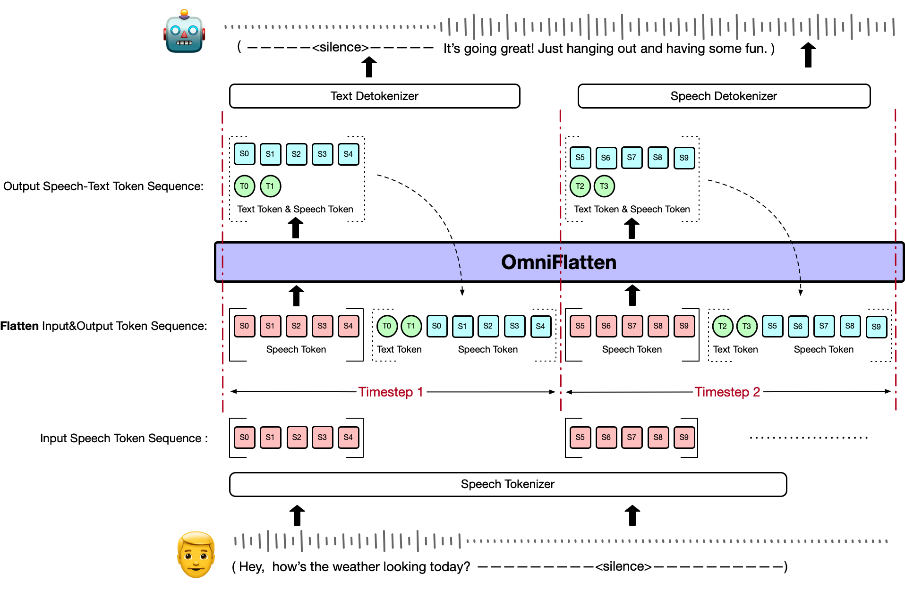
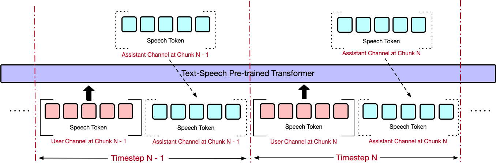

An End-to-end GPT Model for Seamless Voice Conversation
Model Overview
We provide OmniFlatten, a groundbreaking model designed for full-duplex conversation, which
effectively mirrors the complexity and dynamics of natural human dialogue. This model leverages a novel
multi-stage post-training scheme to adapt a large text-based language model into an integrated speech-text
dialogue system that operates in real time. Through progressive fine-tuning, OmniFlatten aligns speech and
text modalities without altering the core architecture, ensuring low latency and seamless interactions. This
approach paves the way for developing more efficient and natural end-to-end full-duplex spoken dialogue
systems.

Experiments
We use a progressive learning approach for model training, adopting Speech-Text Alignment, 4-streaming
training, 3-streaming training, and 2-streaming training.
4-Streaming Training
3-Streaming Training
2-Streaming Training

Cases
We will show you some cases:
Metrics
Speech-Text Alignment
Librispeech (CER)
WenetSpeech (CER)
Model
test_clean↓
test_other↓
test_meeting↓
ASR
OmniFlatten (Ours)
9.46
22.48
31.76
Whisper V3
3.71
5.74
19.91
TTS
OmniFlatten (Ours)
10.9
12.87
50.56
GT Speech Tokens
5.82
12.74
40.18
ASR and TTS evaluation results on Librispeech and WenetSpeech Datasets. OmniFlatten denotes the
speech-text aligned multimodal model after the Modality Alignment training stage. GT Speech Tokens denotes
discretizing the ground truth waveforms into speech tokens and detokenizing them into speech.
Dialogue Capability
Model
Test Set Loss ↓
LLM Score ↑
OmniFlatten
0.8125
5.185258
OmniFlatten w/o half-duplex training
0.8129
5.008698
OmniFlatten w/o modality alignment and half-duplex training
0.8496
4.346218
GT Response
-
7.30685
The impact of Modality Alignment and Half-duplex Dialogue Training on full-duplex dialogue
capabilities, measured by scores assigned by a competitive LLM QWen-max. The CE loss on the test set is
also reported. GT Response denotes the ground truth textual response in the test set.
Turn-Taking Metrics
Chunk Size
Assistant Turn-taking Acc@K 1/5/10/25 (%)
Average Assistant Turn-taking Response Time (K/ms)
User Turn-taking Acc @K 1/5/10/25 (%)
Average User Turn-taking Response Time (K/ms)
5
29.2/59.4/67.4/71.9
3.23/129
2.1/5.7/8.1/17.0
20.55/822
10
19.8/55.7/71.3/75.5
3.99/160
5.5/13.4/19.8/30.0
20.13/805
Assistant Turn-taking and User Turn-taking accuracy at the k-th token (Acc@K) and Efficiency (Response
Time) with different speech chunk sizes in OmniFlatten.